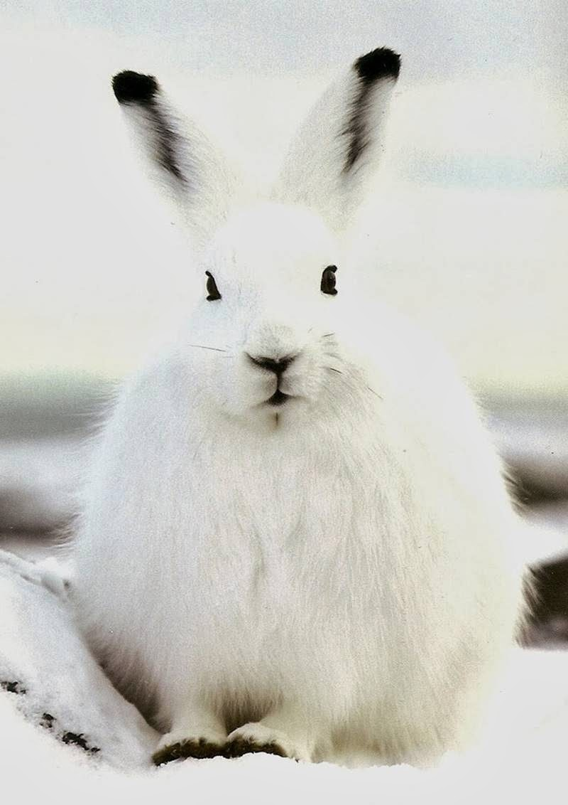
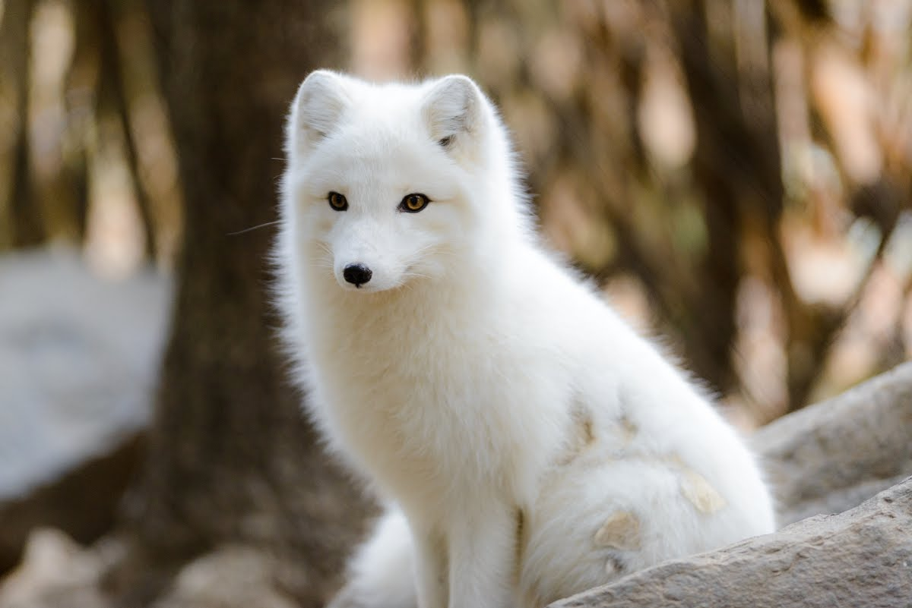

Prey is scarce in the arctic, so the Arctic Wolves have incredibly large territories and works
together to hunt prey. Their
primary target is Musk ox but they eat caribou and arctic hares
as well. When they have the opportunity, they also hunt seals, lemmings,
ptarmigan, and
other nesting birds. While hunting musk oxen, these wolves have to work closely together
to bring down large and potentially
dangerous prey.
